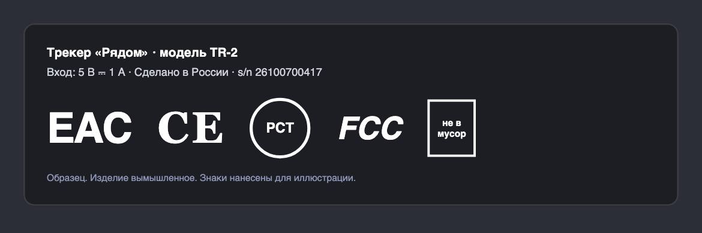

Справочник «Стандарты и сертификаты» · тема 3
Глава 16
Технические регламенты
и знаки соответствия
Программа обычно обходится без сертификата, а устройство — нет. Если проект продаёт трекер, умную колонку или зарядную станцию, к нему применяются технические регламенты Евразийского экономического союза. В главе разобраны регламенты для электроники и знаки на корпусе.
- Документы
- 184-ФЗ ст. 2, 6 · ТР ТС 004/2011 · ТР ТС 020/2011 · ТР ЕАЭС 037/2016
- Уровень
- Базовый
- Где встречается
- Продажа устройств, импорт электроники, маркетплейсы
- Зачем это знать
- Чтобы понимать, какие документы нужны устройству
§1Регламент и стандарт
Технический регламент — обязательный документ: требования к продукции, которые нужно выполнить, чтобы её продавать. Стандарт по общему правилу добровольный и описывает способы выполнить требования. К регламенту прилагаются перечни стандартов: если продукция им соответствует, считается, что требования регламента выполнены.
| Технический регламент | Стандарт | |
|---|---|---|
| Обязателен | да, по закону | по общему правилу нет |
| Кто принимает | Совет Евразийской экономической комиссии | органы по стандартизации |
| Что содержит | требования безопасности | методы, характеристики, способы испытаний |
| Подтверждение | сертификат или декларация, знак EAC | добровольная сертификация |
§2Регламенты для электроники
| Регламент | О чём | Пример |
|---|---|---|
| ТР ТС 004/2011 | безопасность низковольтного оборудования: от 50 до 1000 В переменного тока | блок питания, зарядное устройство |
| ТР ТС 020/2011 | электромагнитная совместимость технических средств | любое устройство с электроникой |
| ТР ЕАЭС 037/2016 | ограничение опасных веществ в электротехнике и радиоэлектронике | свинец, ртуть, кадмий в платах |
Одно устройство часто подпадает сразу под несколько регламентов: зарядная станция для ноутбуков — под все три. Документ оформляют по каждому или единый по нескольким регламентам.
- Определить регламенты: 020/2011, 037/2016; блок питания — 004/2011
- Испытания в аккредитованной лаборатории
- Сертификат или декларация, запись в реестре Росаккредитации
- Знак EAC на корпусе, упаковке и в инструкции
- Приложение к трекеру сертификата не требует
- Но обрабатывает данные о местоположении детей: закон 152-ФЗ
- Нужен отдельный разбор по главе 14.1 справочника «Вайбкодинг в России»
§3Знаки на корпусе

| Знак | Территория | Что означает |
|---|---|---|
| EAC | Евразийский экономический союз | продукция прошла подтверждение по техническим регламентам ЕАЭС |
| CE | Европейский союз | изготовитель заявил о соответствии директивам и регламентам ЕС |
| РСТ | Россия | добровольная сертификация в национальной системе |
| FCC | США | соответствие правилам Федеральной комиссии связи по радиопомехам |
§4Частые ошибки
§5Проверьте себя
- Чем технический регламент отличается от стандарта?
- Под какие регламенты ЕАЭС подпадает зарядное устройство?
- Что означают знаки EAC и CE?
- Нужен ли сертификат приложению к GPS-трекеру? Какие требования к нему применяются?
004/2011 — низковольтное020/2011 — ЭМС037/2016 — опасные веществаEAC — ЕАЭСCE — ЕСРСТ — добровольнаяFCC — СШАопределить регламентыиспытаниясертификат или декларацияреестр, знакСправочник «Стандарты и сертификаты» · глава 16Макаров Максим Николаевич